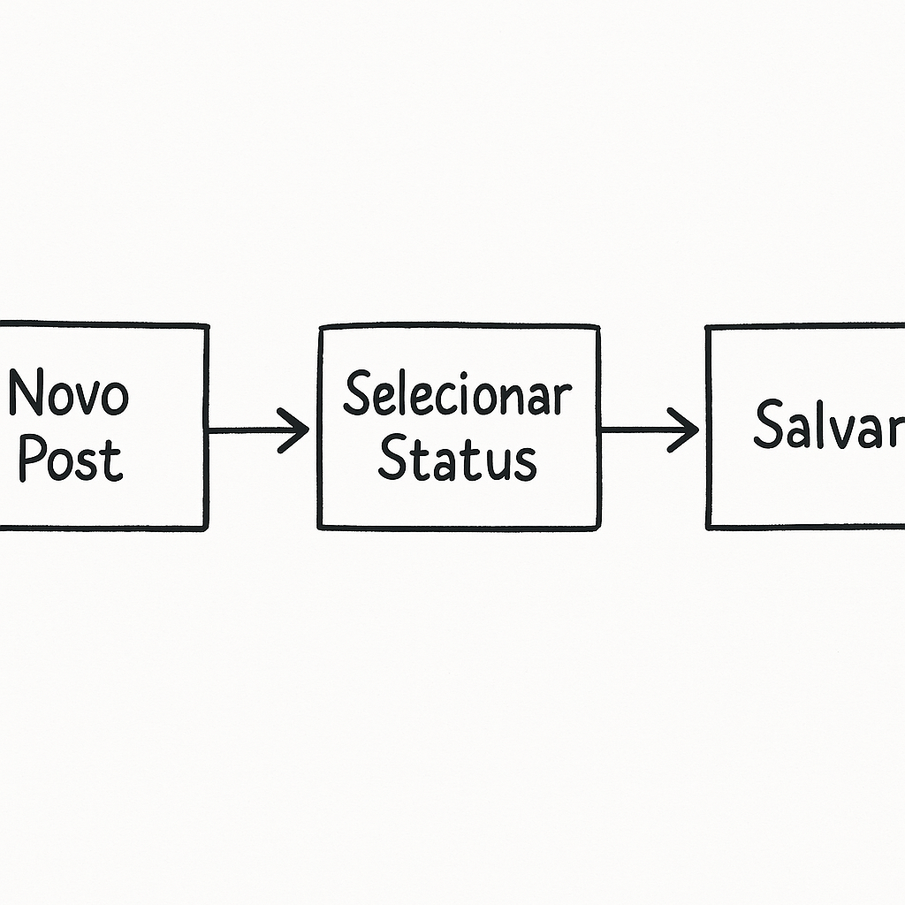
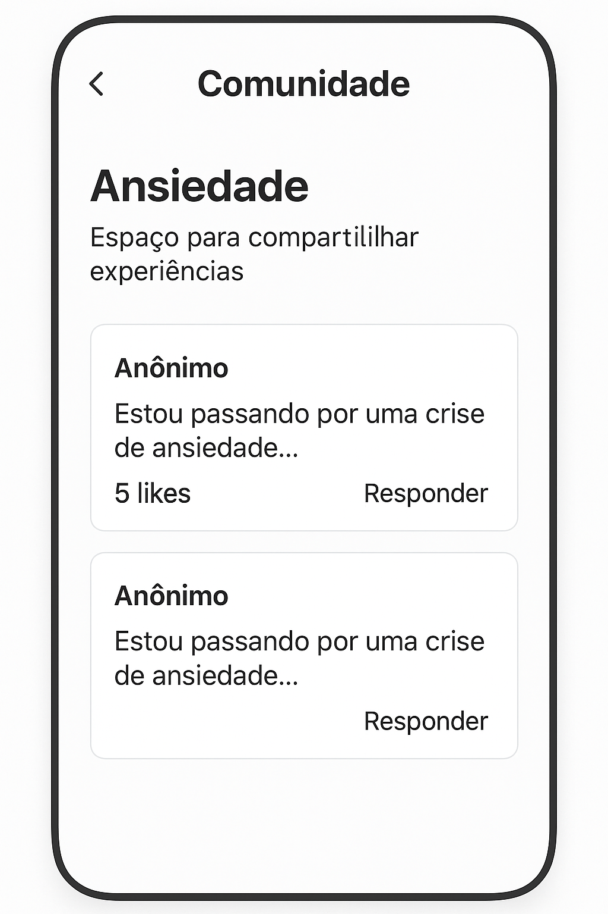
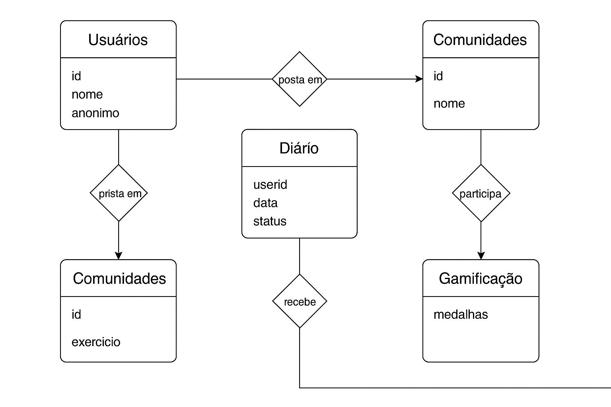

Bem-vindo ao Fórum Reequilibra
O Fórum Reequilibra é um espaço seguro e acolhedor criado para promover o bem-estar emocional e fortalecer o apoio mútuo entre pessoas. Nossa plataforma oferece uma variedade de recursos para ajudar você a cuidar da sua saúde mental:
- Diário emocional: para registrar e refletir sobre seus sentimentos
- Comunidades de apoio: para compartilhar experiências e encontrar empatia
- Recursos científicos: baseados em psicologia e saúde mental
- Ferramentas interativas: para autoconhecimento e equilíbrio

Regras de Participação
Para garantir um ambiente respeitoso, seguro e acolhedor para todos, o Fórum Reequilibra segue algumas regras essenciais de convivência:
- Respeite a diversidade de opiniões e experiências
- Evite julgamentos, críticas ofensivas ou linguagem agressiva
- Não compartilhe informações pessoais sensíveis
- Denuncie conteúdos impróprios ou que violem os princípios do fórum
- Lembre-se: este espaço não substitui atendimento profissional
Recursos Principais
Diário Emocional
Registro diário de sentimentos e experiências:
{
"id": "",
"userid": "1",
"data": "2025-04-24",
"titulo": "Dia difícil na faculdade",
"status": 1,
"conteudo": "Hoje foi um dia muito complicado na faculdade...",
"favorito": false
}
Comunidades
Fóruns temáticos de apoio:
{
"id": "1",
"nome": "Ansiedade",
"descricao": "Espaço para compartilhar experiências",
"posts": [
{
"id": 101,
"autor": "Anônimo",
"conteudo": "Estou passando por uma crise de ansiedade...",
"likes": 5
}
]
}

Demonstração Interativa
Tópicos Recentes
Arquitetura dos Dados
Relacionamento entre usuários, diário emocional e comunidades.
